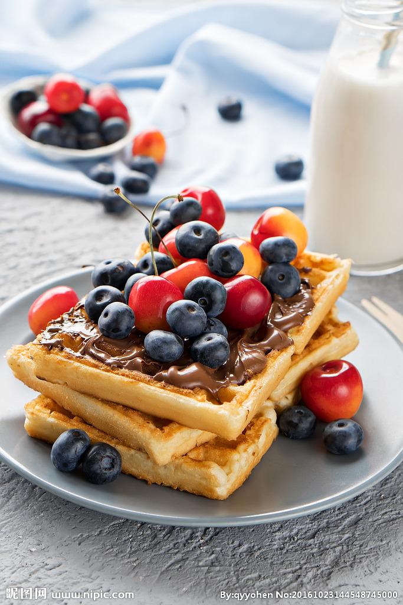

华夫饼，又叫格子饼、格仔饼。是一种烤饼，源于比利时，用配有专用烤盘的烤炉制成。华夫饼属于点心菜谱，主要原料是鸡蛋和牛奶，蛋含有丰富的蛋白质、脂肪、维生素和铁、钙、钾等人体所需要的矿物质。
食材准备 松饼粉、水、鸡蛋、炼奶、花生酱，一些牛奶，松饼粉1kg加水或牛奶500g及鸡蛋500g。 制作步骤 1. 用少许的冷开水将松饼粉放入搅拌机打匀，也可以手工放入食品盆里用筷子打匀，然后倒入牛奶 鸡蛋继续打匀。 2. 松饼机预热2分钟，放点牛油，再取半杯浆料倒入顶热好的松饼机铁盘上，铺满整个松饼机。 3. 盖上机器烤2分钟，等到没有蒸气冒出即可起锅。 4. 将松饼机打开把已做好的松饼摆放于盘中，抹上花生酱和炼奶即可享用。 (花生酱和炼奶可加可不加，可根据自己的口味加入其它果酱) 小贴士 1. 华夫饼一定要保持中小火，火大会糊。 2. 每次倒面糊时，都要刷一次油。 3. 为了华夫饼上色均匀，请移动模具，使其受热均匀。 4. 模具预热好的状态为滴一滴水会迅速消失。
huafubin.jpg

.